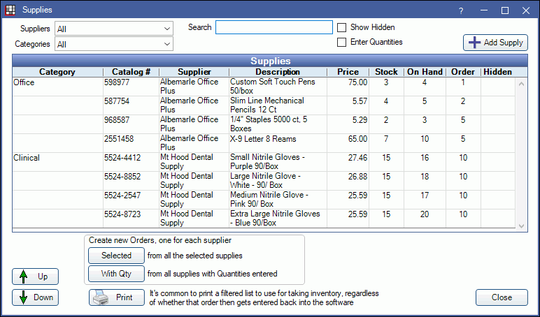
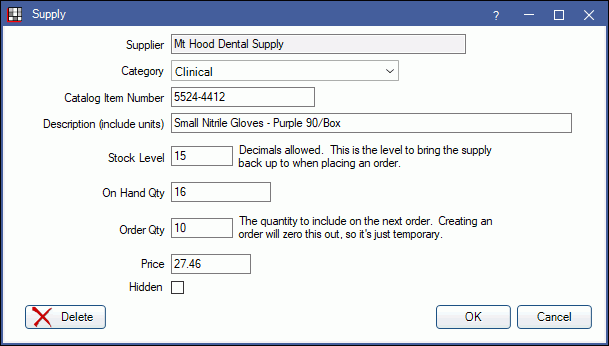

Supplies
Enter supplies into the Supplies list before generating supply orders.
In the Supply Inventory window, click Supplies.
This is the main list of supplies used by the practice. Supplies must be entered into the Supplies list before they can be added to Supply Orders. By default, supplies are listed alphabetically; first by category, then by description. Any supply field can also be searched.
- Suppliers: Click the dropdown to filter by Supplier.
- Categories: Click the dropdown to filter by Category.
- Search: Enter the criteria. The list will update as you type.
- Show Hidden: Check to view supplies marked hidden.
- Enter Quantities: Check this box to quickly enter On Hand and Order numbers for each item in the Supplies grid below. Click into the Order field and enter a value.
- Add Supply: Select a supplier and category from the dropdown menus, then click Add to create a new supply item.
- Up/Down Arrows Highlight a supply, then click the up or down arrow to rearrange the list within a category.
- Create new Orders for each supplier:
- Selected: Highlight supplies, then click Selected to create an order for each selected supplier. The saved Order Qty will not be zeroed out.
- With Qty: Only create orders for supplies with a quantity entered. The saved Order Qty will be zeroed out.
- Print: Click to print the list.
Adding or Editing a Supply
Double-click an existing supply to edit it. Alternatively, select a supplier from the list and click Add Supply to create a new supply entry.
- Supplier: Read only. The supplier must be selected from the Supplies window before clicking Add Supply. It cannot be changed.
- Category: Select the Supply Category. Defaults to the category selected in the Supplies window. If no category is selected in the Supplies window, the first category in the list will be selected.
- Catalog Item Number: Enter the catalog number.
- Description: (Required) Enter a description. Include units. For example "case of 10 boxes" or "box of 100".
- Stock Level: Enter the maximum number of items to keep on hand. Units should match how they are ordered. For example, if a unit of gloves is a case of 10 boxes, then this might be 1.5 to indicate a reorder is needed whenever there are less than 15 boxes of gloves.
- On Hand Qty: Enter the quantity currently stocked.
- Order Qty: Enter the quantity needed on the next order. When creating an order using With Qty, this will be zeroed out.
- Price: Enter the cost of the item.
- Hidden: Mark a supply as hidden so it no longer appears in the supplies list. Supplies that have been placed in an order can only be hidden, not deleted.